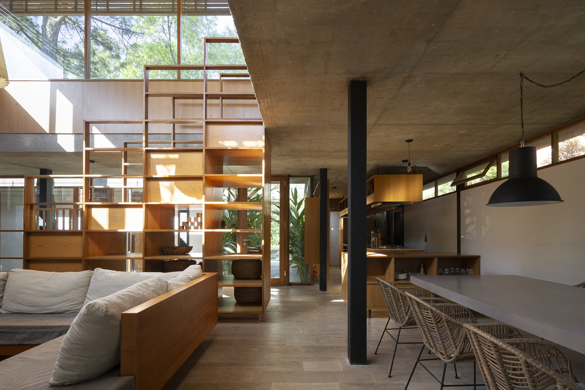
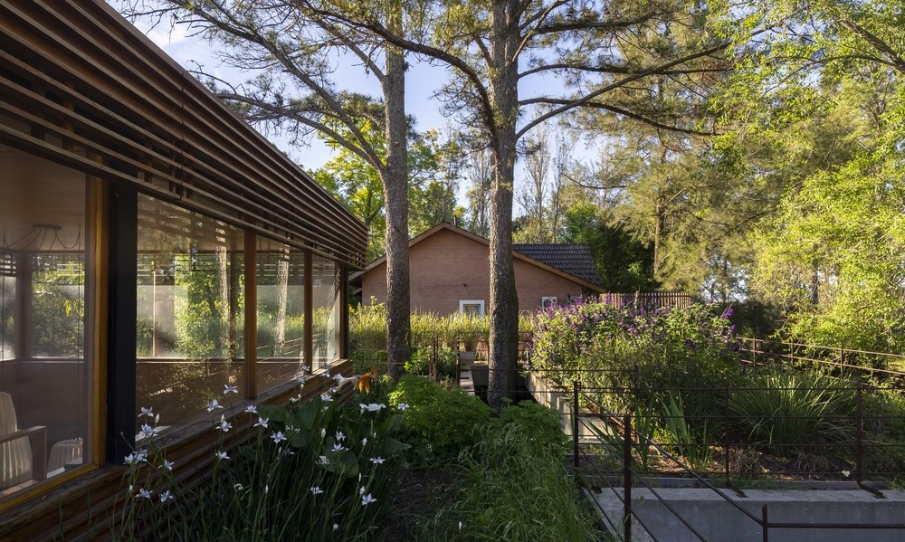
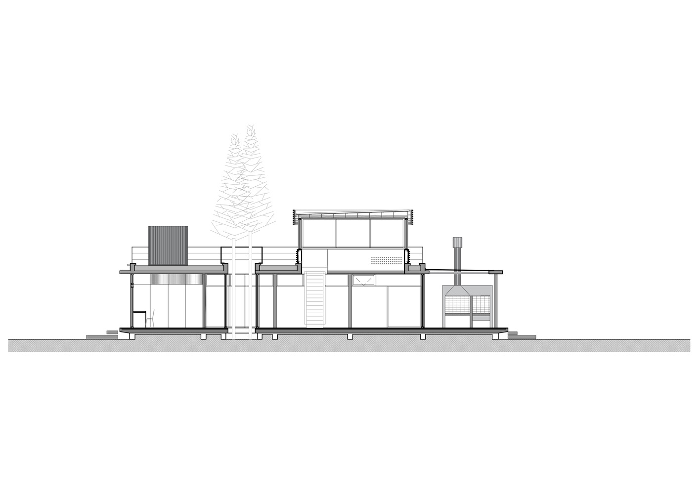
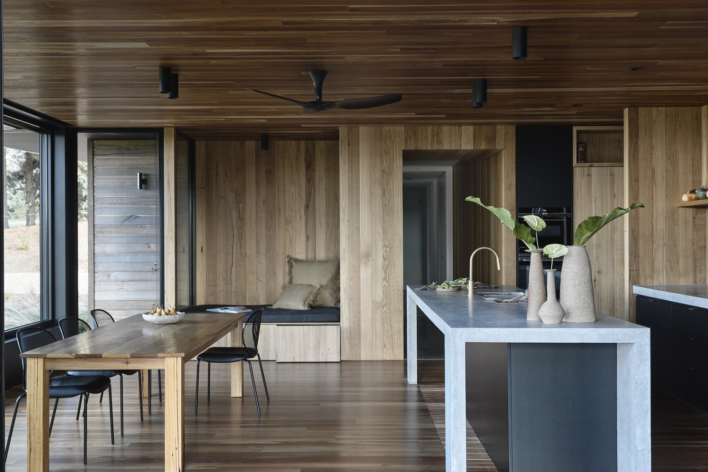
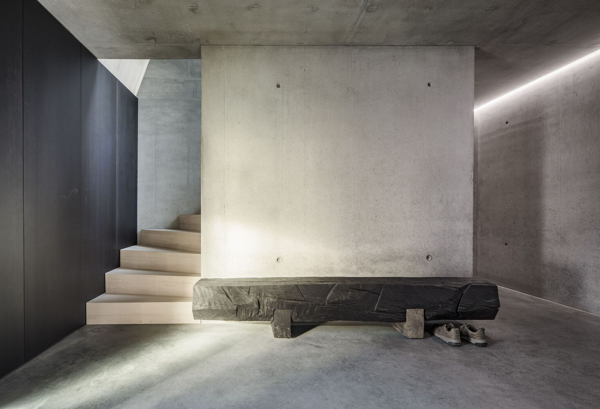

Donde la naturaleza se encuentra con la arquitectura...
personalizamos cada proyecto a tu estilo de vida
En Casa Lago, nos especializamos en ofrecer soluciones de construcción personalizadas en Bariloche. Cada proyecto es único y se adapta a las necesidades y deseos de nuestros clientes. A continuación, te presentamos nuestros principales servicios:
Diseño y Arquitectura
Nuestro equipo de arquitectos y diseñadores trabaja estrechamente contigo para crear planos y diseños que reflejen tu visión y estilo. Desde la concepción inicial hasta los detalles finales, nos aseguramos de que cada aspecto de tu hogar esté cuidadosamente planificado.
Construcción Personalizada
Ofrecemos servicios de construcción de alta calidad, utilizando materiales duraderos y técnicas innovadoras. Supervisamos cada etapa del proceso de construcción para garantizar que tu proyecto se complete a tiempo y cumpla con los más altos estándares de calidad.
Gestión de Proyectos
Nos encargamos de la gestión completa del proyecto, coordinando todos los aspectos desde el inicio hasta la entrega final. Esto incluye la planificación, contratación de subcontratistas, control de presupuestos y seguimiento del progreso para asegurar una experiencia sin complicaciones.
Asesoría en Materiales
Te ayudamos a seleccionar los mejores materiales para tu proyecto, teniendo en cuenta tanto la estética como la funcionalidad. Nuestra experiencia en la industria nos permite ofrecerte recomendaciones que se adapten a tu estilo y presupuesto.
Renovaciones y Remodelaciones
Además de nuevas construcciones, también nos especializamos en renovaciones y remodelaciones. Ya sea que desees actualizar una cocina, renovar un baño o realizar una transformación completa, estamos aquí para ayudarte a revitalizar tu hogar.